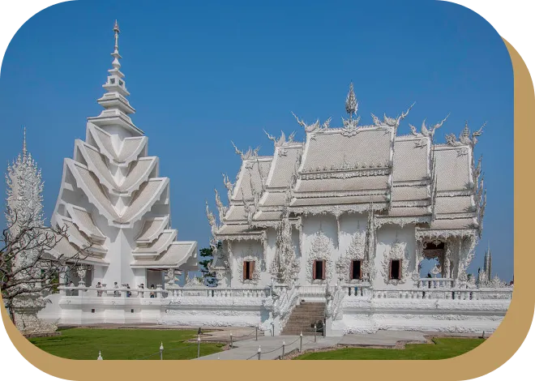
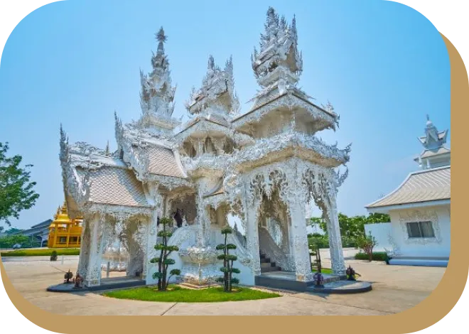
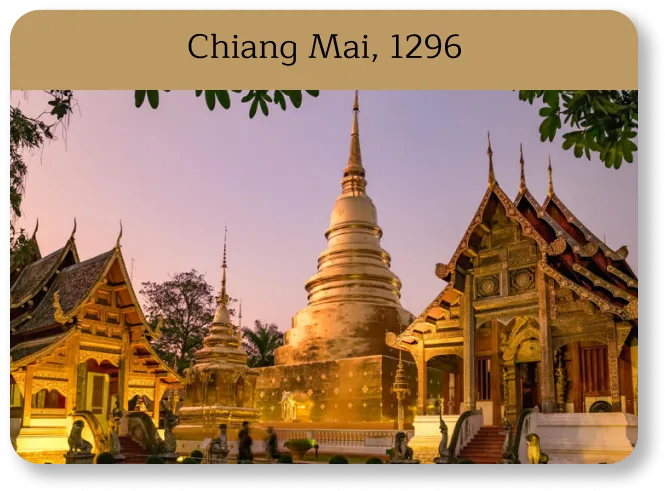
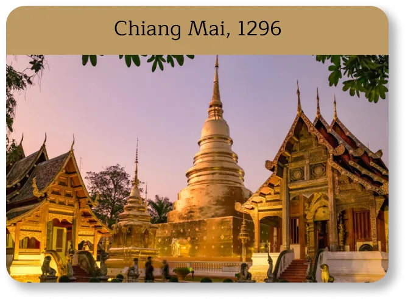
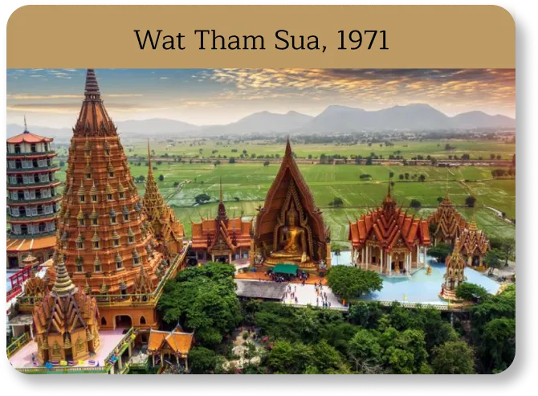
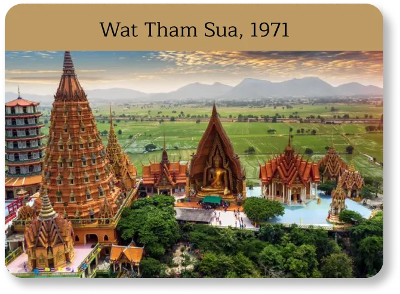

Le Temple Blanc, oeuvre d'art ou monument religieux ?
De sanctuaire à monument

Un temple qui à failli ne pas aboutir
Les autres bâtiments aux alentours

Ubosot


Le crématorium

Frise des temples environnant
 

Chiang Mai, 1296


Wat Chai Watthanaram, 1630
 

Wat Tham Sua, 1971


Wat Huay Pla Kong, 2001


Temple Bleu, 2005